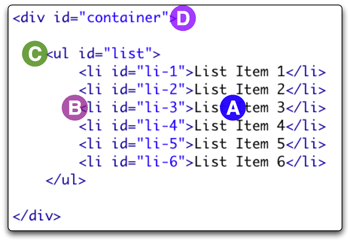

YUI Library Examples: Event Utility: Using Event Utility and Event Delegation to Improve Performance
Event Utility: Using Event Utility and Event Delegation to Improve Performance
Event delegation is a technique whereby you use a single event handler on a parent element to listen for interactions that affect the parent's descendant elements; because events on the descendant elements will bubble up to the parent, this can be a reliable and extremely efficient mitigation strategy for reducing the number of resource-consuming event handlers you have on any given page. (You can read more about Event Delegation in this YUIBlog article.)
In the example below, mousing over an item in the list will change its
background color to yellow. Clicking an item will change its
background color to red. Because we're using event delegation, only one event
listener is needed for each type of event (click,
mouseover, and mouseout), regardless of the size of
the list. To illustrate this point, click the "Add Item" button to append more
items to list. An infinite number of items can be added to the list, and still
just one click, mouseover, and mouseout
event handler is required to highlight the items.
- List Item 1
- List Item 2
- List Item 3
- List Item 4
- List Item 5
Understanding Event Delegation
Event delegation refers to the use of a single event listener on a parent object to listen for events happening on its children (or deeper descendants). Event delegation allows developers to be sparse in their application of event listeners while still reacting to events as they happen on highly specific targets. This proves to be a key strategy for maintaining high performance in event-rich web projects, where the creation of hundreds of event listeners can quickly degrade performance.
This example illustrates the use of event delegation (via the
Event Utility) on
click, mouseover, and mouseout events.
The problem we will solve here involves reacting to click,
mouseover, and mouseout events on list items. As
there can be many list items, we want to be frugal in applying event listeners.
At the same time, we want to know exactly which <li> was
involved in a click, mouseover, and
mouseout event.
To do this, we'll rely on DOM event bubbling — the process by which an
event progresses from its direct target up through the target's node ancestry
until it reaches the window object. The graphic below may help to
illustrate the flow: In this case, we'll count on the fact that a click or a
mouseover on (A) the text node within an <li>
progresses to the <li> element itself (B), then to the
<ul> element (C), and then to the list's parent
<div> (D) and so on up the document:

Getting Started
Because events flow this way, we can count on events happening to our
<li>s bubbling up to our <div> whose ID attribute is
"container."
We'll start with some structural markup — a <div>
containing a <ul> with 5 <li> children.
Event Delegation Made Easy
The Event Utility makes using event delegation easy by providing a
delegate method that enables the use of CSS selector
syntax to define the descendants of the delegation container for which the
event listener should be called. Note: Event's delegation functionality
is packaged separately in an event-delegate module, which itself requires the
Selector Utility.
To use the delegate method, pass the id of the element that is
the delegation container as the first argument (in this case
<div id="container">). The second argument is the
type of event you want to delegate, and the third is the event listener. The
forth argument is a CSS selector that defines the descendant elements that must
match the target of the event in order for the listener to be called.
First we'll add the event listener used to highlight each item when it is
clicked. As we're only really interested in clicks on <li>s,
we'll specify a CSS selector of "li" as the fourth argument to the
delegate method. The element that matched the CSS selector
will be passed as the second argument to the event listener. The element
that is the delegation container for the listener is passed as the third
argument:
The same technique works for the mouseover and
mouseout events as well.
In this example, we've used three event listeners with their associated memory
and performance load to serve as delegates for the same three events on each
item in the list. Instead of 3 event listeners per item, we now have three
on the container. And
the code works regardless of the number of li's added to the list
— if the list was 100 items long, we'd be saving ourselves 297 event
listeners, which is enough to make a noticable difference in how your page
responds. In a complicated page context, it's easy to see how this technique
can dramatically reduce the number of event listeners required and thereby
improve the performance of your application.
Configuration for This Example
You can load the necessary JavaScript and CSS for this example from Yahoo's servers. Click here to load the YUI Dependency Configurator with all of this example's dependencies preconfigured.
YUI Logger Output:
Note: You are viewing this example in debug mode with logging enabled. This can significantly slow performance.
Event Utility Examples:
- Simple Event Handling and Processing
- Using Custom Events
- Using onAvailable, onContentReady, and onDOMReady
- Using Event Utility and Event Delegation to Improve Performance
- Skinning via Progressive Enhancement using the Event Utility and the YUILoader
- Implementing Container Keyboard Shortcuts with KeyListener (included with examples for Container Family)
- Using the Container ARIA Plugin (included with examples for Container Family)
More Event Utility Resources:
- User's Guide (external)
- API Documentation
- Cheat Sheet PDF (external)
- Yahoo! UI Library
- Home (external)
- YUIBlog (external)
- YUI Discussion Forum (external)
- YUI on GitHub
- API Documentation
- Functional Examples
- YUI Theater (external)
- YUI License (external)
- YUI Functional Examples
- Animation
- AutoComplete
- Browser History Manager
- Button
- Calendar
- Carousel
- Charts
- Color Picker
- Cookie
- Connection Manager
- Container
- DataTable
- Dom
- Drag & Drop
- Event
- Get
- ImageCropper
- ImageLoader
- JSON
- Layout Manager
- Logger
- Menu
- Paginator
- Profiler
- ProfilerViewer
- ProgressBar
- Resize
- Rich Text Editor
- Selector
- Slider
- Storage
- SWF
- SWFStore
- Stylesheet
- TabView
- TreeView
- Uploader (experimental)
- YAHOO Global Object
- YUI Loader
- YUI Test
- Reset CSS
- Base CSS
- Fonts CSS
- Grids CSS
- YUI Articles on the YUI Website
- YUI FAQ (external)
- Graded Browser Support (external)
- Bug Reports/Feature Requests (external)
- Serving YUI Files from Yahoo! (external)
- Security Best Practices (external)
Copyright © 2009 Yahoo! Inc. All rights reserved.
Privacy Policy - Terms of Service - Copyright Policy - Job Openings